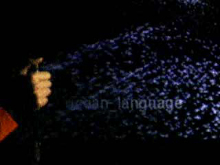

| dynamic |
| home page |
|  | Peter is looking into applications of virtual technology to help physically disabled persons. .au Reality envelops our most unconscious thoughts and conscious actions, it drives our most basic desires and needs. As we pursue our desires and needs, we socially construct our individual realities and the social reality. All other realities are finite and limited compared to the reality of everyday life. |
| I'm not sure if there's feedback, but that would be even better. . Hands On Virtual Reality - Real-time Computer Games Loft "Computers are useless. Why not read our Introduction to Artificial Intelligence. A BBC News article, Future in Your Hand, describes virtual glove equipped with sensors to capture your movement. |
|